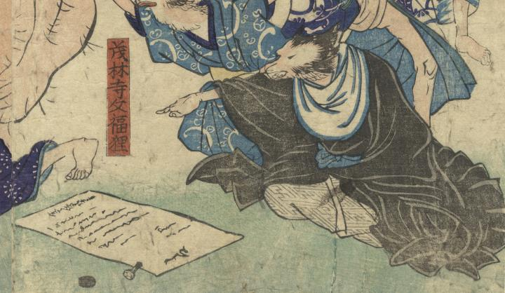

← 图鉴索引

証文を指さし座る狸。黒の羽織に白の首巻き、紗綾形の袴を身に着けている。
出典：親書誌：U426_nichibunken_0319：狸の戯；タヌキ ノ タワムレ／日付：2014／資源識別子：U426_nichibunken_0319_0001_0000
Copyright (c)2010- International Research Center for Japanese Studies, Kyoto, Japan. All rights reserved.